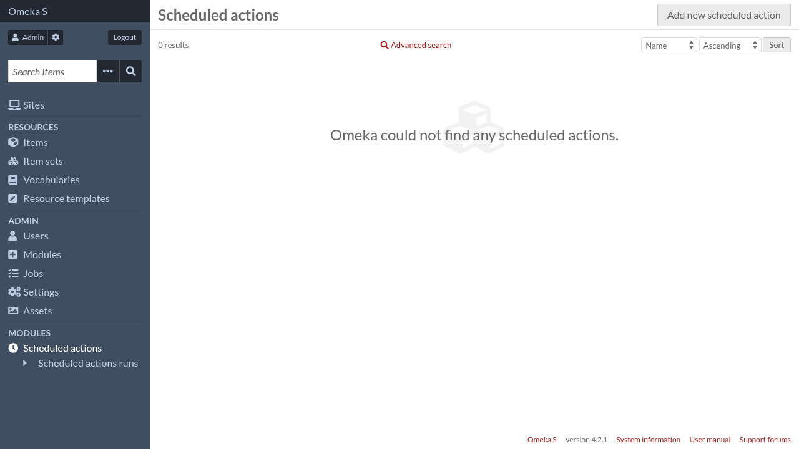
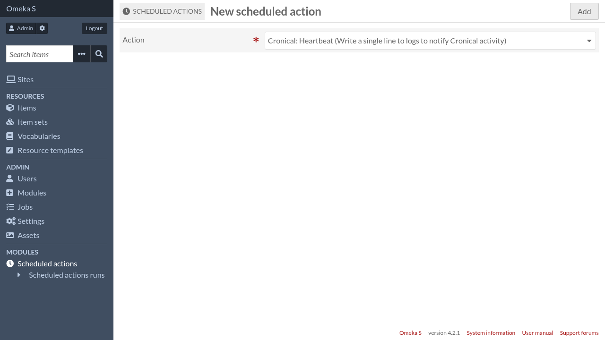
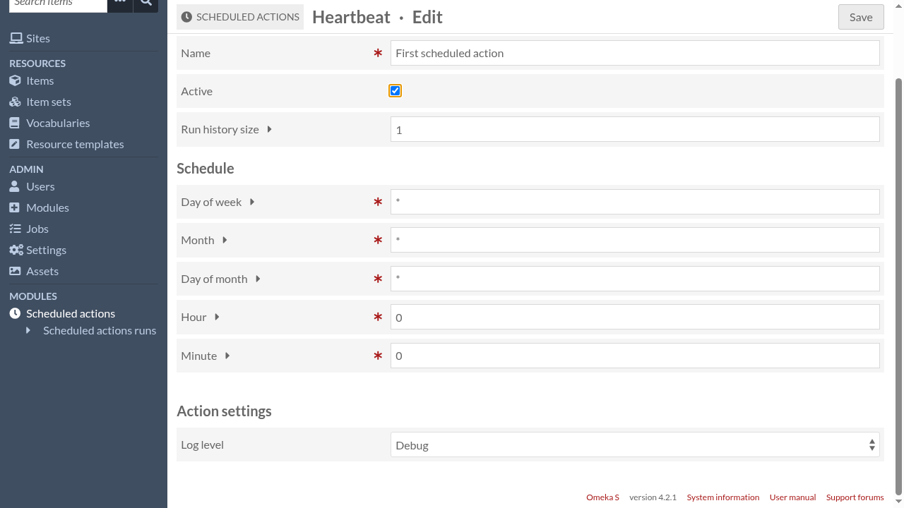

Scheduled actions
To manage scheduled actions, go to Omeka S administration interface and click on “Scheduled actions” in the navigation menu.

Click on “Add new scheduled action”

Choose an action then click on the “Add” button.
Cronical provides a few built-in actions. Other enabled modules can provide more actions.

Scheduled actions have the following parameters:
- Name
A descriptive name of this particular scheduled action (the same action can be scheduled more than once).
- Active
Only active scheduled actions are run, so you can use this parameter to temporarily disable a scheduled action.
- Run history size
Every time a scheduled action is run, Cronical keep some information about this execution (or “run”), like the time it started or its status.
To avoid an evergrowing database table of old runs, Cronical only keep the most recent runs and delete the others. This parameter allows you to configure how many runs you want to keep for that scheduled action.
The next section allows to configure when the action will be run. It should be
familiar to those that are used to configure cron but there are some differences.
- Day of week
The day of week during which the action will be run. Can be any valid cron expression, for instance:
0means Sunday1-5means from Monday to Friday*/2means Sunday, Tuesday, Thursday and Saturday0,6means Sunday and Saturday
- Month
The month during which the action will be run. Can be any valid cron expression, for instance:
1means January2-6means from February to June*/2means January, March, May, July, September and November3,6,9means March, June and September
- Day of month
The day of month during which the action will be run. Can be any valid cron expression, for instance:
1means the 1st day of the month1-10means from the 1st to the 10th day of the month*/5means the 1st, 6th, 11th, 16th, 21st, 26th and (if it exists) the 31st day of the month1,11,21means the 1st, 11th and 21st day of the month
- Hour
The hour at which the action will be run. Unlike the other parameters, only a single number is allowed here.
- Minute
The minute at which the action will be run. Unlike the other parameters, only a single number is allowed here.
Finally, if the action itself declares more parameters, they will be configurable there too.
When you are done, click on the “Save” button.

Scheduled action owner
Scheduled actions are owned by the user who created it. When an action is run, it acts as if the owner was authenticated. So for instance, if an action creates an item without specifying an explicit owner, the action’s owner will be the owner of the new item.
Currently it’s not possible to change the owner of a scheduled action.
System scheduled actions
System admistrators have the ability to add special scheduled actions, called system scheduled actions. These scheduled actions appear in the Omeka S administration interface but they cannot be modified nor deleted.
System scheduled actions can be added using the script bin/schedule-add. A typical usage would be:
bin/schedule-add \
--owner-id 1 \
--action "Cronical\\Action\\Heartbeat" \
--cron-expression "0 0 * * *" \
--system \
--name "Heartbeat (system)" \
--settings '{"log_level": 4}'
Scheduled actions added by this script are immediately active.
Run bin/schedule-add --help for more documentation.
bin/schedule-add have the ability to bypass the limitation on hour and
minute schedule, so it can be used to schedule an action every minute (for
instance). It can also be used to add non-system scheduled actions.